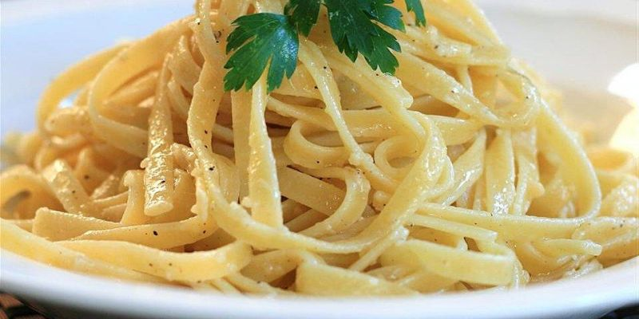

Fideos con mantequilla

Los fideos con mantequilla es una receta clasica y muy sencilla de hacer
Esta receta se podria conciderar una "base" para elaborar platos más complicados, por ejemplo agregandole distintos tipos de salsa
Ingredientes
- Tallarines, 250 gramos
- 2 cucharadas de mantequilla
- Sal a gusto
- Aceite
- Condimentos de preferencia
Pasos
- Hervir agua, 3/4 de olla
- Agregar sal, aceite y esperar a que vuelva a hervir el agua
- Poner los tallarines
- Revolver cada cierto tiempo por 8 minutos para estar al dente o hasta que este al gusto personal
- Colar los tallarines en un colador
- Poner 2 cucharadas de mantequilla en la olla
- Volver a poner los tallarines en la olla y revolver para mezclar la mantequilla
- Poner condimentos de preferencia y revolver
- Servir